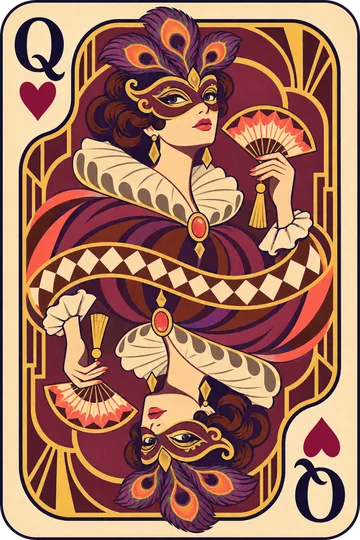
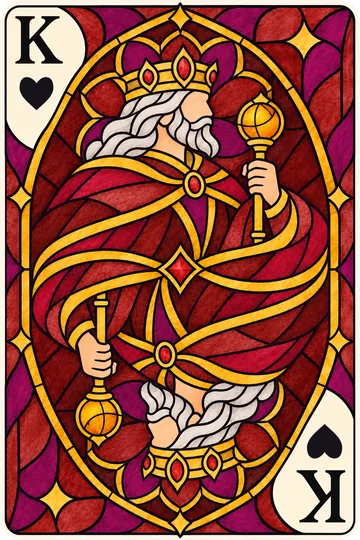
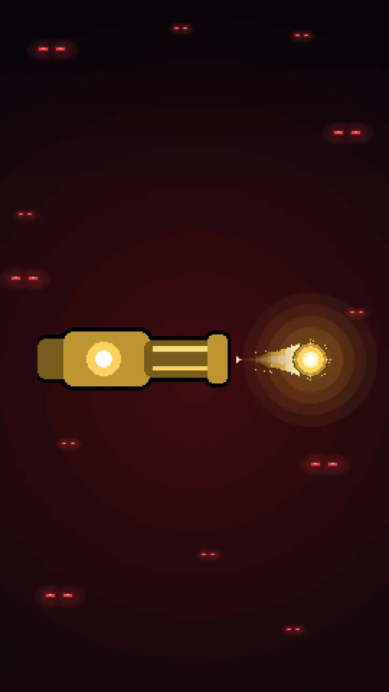
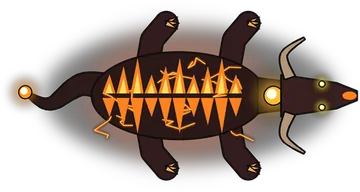
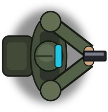

San
Pendiri
Studio game independen
Kami membuat game mobile yang mudah dimulai, seru dimainkan, dan bikin kamu bilang sekali lagi
.
Tentang kami
Sando Games didirikan oleh dua orang: San dan Do. Nama studio ini lahir dari gabungan nama keduanya, San + Do = Sando.
Sebagai studio kecil, kami mengerjakan semuanya dengan tangan sendiri, dari ide, desain permainan, sampai detail terkecil di layar. Tujuan kami sederhana: membuat game yang benar-benar ingin kami mainkan sendiri.
Pendiri
Pendiri
Game kami
Dari meja kartu yang menegangkan sampai kota yang diserbu monster raksasa.


Ingat kartunya, ikuti kocokannya, tebak yang benar. Game kartu yang gampang dimainkan tapi bikin penasaran, untuk melatih ingatan dan ketelitian mata.



Malam terakhir umat manusia. Turun ke arena kota yang hancur dan hadapi kaiju raksasa satu per satu. Incar titik lemahnya yang menyala, menghindar di detik yang tepat, dan bangun persenjataanmu.
Lima belas monster, lima belas arena. Geser untuk melihat semuanya.
Cara kami berkarya
Aturan yang bisa dipahami dalam beberapa detik, dengan tantangan yang terus bertambah seiring kamu makin jago.
Kontrol sentuh yang nyaman, sesi yang pas untuk waktu luang, dan tampilan yang rapi di berbagai ukuran layar.
Hadiah harian, misi, koleksi, dan event musiman membuat setiap hari terasa berbeda.
Dukung kami
Sando Games hanya dikerjakan oleh dua orang. Setiap dukungan dari kamu membantu San dan Do terus membuat game baru, menambah konten, dan menjaga game kami tetap gratis dimainkan.
Dukungan dikirim lewat Trakteer, bisa mulai dari nominal kecil.
Terima kasih sudah mendukung developer game indie!
Ingin bekerja sama, memberi masukan, atau sekadar menyapa San dan Do? Alamat email dan media sosial resmi Sando Games akan segera diumumkan.
Coba demo Tebak Kartu